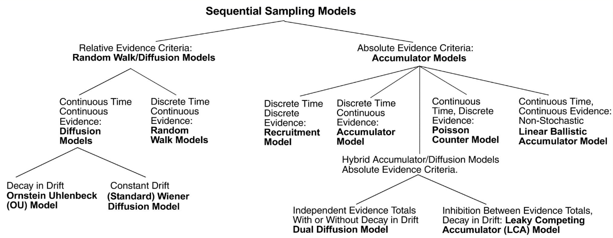
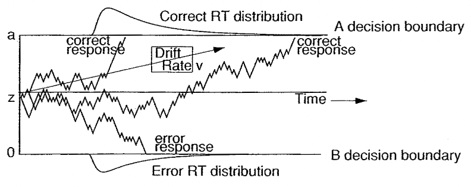
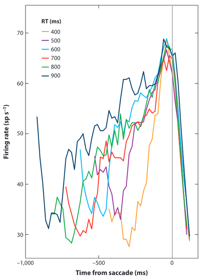

Decision-making#
Warning
This chapter is under construction.
Terminology#
Decision#
A decision is “a deliberative process that results in the commitment to a categorical proposition.” [Gold and Shadlen, 2007]
People make thousands of (big and small) decisions everyday. A few examples:
Choosing what pair of socks to wear.
Deciding on a TV series to watch.
Choosing one’s next car/bike.
Decision-making#
Decision-making designates the cognitive process resulting in a decision.
The sequential nature of decision-making#
Humans and animals make their decisions after a deliberation phase.
Many decisions are based on information that unfolds over time (example: cues for solving an homicide).
Even if all informative data is immediately available (example: a chess position), it has to be treated sequentially by our nervous system, reflecting its inability to process information simultaneously.
From stimulus to response#
Decision-making can be formalized as the mapping from a stimulus to a response.
Time between stimulus and response execution is called Reaction Time or Response Time (RT) [Forstmann et al., 2016], [Myers et al., 2022].
\(T_{er}= T_e+T_r\) is called non-decision time.

Speed/accuracy tradeoff#
All decisions are made under time pressure [Forstmann et al., 2016]. The balance between response time and accuracy is called the speed/accuracy trade-off.
It is at least partially under conscious control: decision-makers can decide to make faster decisions at the expense of an higher error rate, or slower, more accurate decisions [Ratcliff et al., 2016]. This complicates the interpretation of behavioral data.
Ideally, what is needed is a way to evaluate data that considers not only accuracy and speed, but the interaction between them [Myers et al., 2022].
The cognitive processes of decision-making#

Modeling speeded decision-making#
Context#
One approach to understanding decision-making is through computational models.
Several models have been developed to account for the speed/accuracy trade-off and explain how people and animals make decisions under time pressure.
Historically, most research on the dynamics of decision-making has been focused on simple, repeatable problems involving fast binary-choice decisions with one correct answer.
Task examples#
Lexical decision tasks: pressing one key if the stimulus is a word or another if it is a non-word.
Saccadic flanker tasks: moving the eye in the direction indicated by a central stimulus, ignoring the directionality of flanker stimuli.
Random Dot Kinematogram (RDK): judging whether a subset of dots move to the left or to the right.

Measures of interest#
Response times (RTs) for correct responses and for error responses.
Distributions of RTs across trials.
Proportion of correct responses (accuracy).
Sequential sampling#
A popular class of models assumes that, on each trial, the decision maker accumulates noisy samples of information from the environment until a threshold of evidence is reached.
Such accumulation-to-threshold models are known as sequential sampling models, a.k.a. evidence accumulation models.
Different approaches to sequential sampling coexist. A key distinction is the number of accumulators (structures for gathering evidence in favor of one response) and whether they are independent from one another.
An accumulator is also called a Decision Variable (DV).
Example: sequential sampling for RDK#
The sequential sampling model family#

Accumulator models#
These models, also known as race models, have independent accumulators (one per possible choice) and an absolute evidence response rule (two fixed thresholds, once for each accumulator). The process stops once one of the accumulators reaches its threshold.
Random walk models#
These models use a relative evidence rule: a response is initiated as soon as the difference in accumulated evidence reaches a predefined threshold, also called a criterion.
Problem example: the gambler’s ruin#
Two gamblers A and B have a (possibly different) starting capital and play a series of independant games against each other. Every game has a fixed chance \(p\) of being won by gambler A. After each game, the winner obtains one unit of the other player’s capital. The process continues until one of the gamblers is bankrupt.
This problem can be modelised as a random walk, with \(p\) representing the drift of the process. Depending on the value of \(p\), the process will drift towards one of the thresholds (gambler B’s bankruptcy if \(p>0.5\)).
Mathematical modeling#
\(K\): number of possible states of the world. For binary choices, \(K=2\).
\(h_k, k \in [1,K]\): hypothesis (state). Examples: dot movement type, presence of a stimulus, etc.
\(H_k, k \in [1,K]\): choice associated with hypothesis \(h_k\).
\(P(h_k)\): probability that \(h_k\) is true before obtaining any evidence about it.
\(n\): number of evidences received.
\(e_i, i \in [1,n]\): evidence (noisy information) and guiding commitment to a particular hypothesis \(h_k\).
\(P(e_i|h_k)\): likelihood (values that \(e_i\) can attain when \(h_k\) is true).
Sequential Probability Ratio Test#
Particular form of sequential analysis for binary decisions (\(K=2\)) where the DV is constructed from multiple, independent pieces of evidence \(e_1, e_2, \dots, e_n\) as the logarithm of the likelihood ratio between hypotheses \(h_1\) and \(h_2\).
\(w_i, i \in [1,n]\): weight of the \(i\)th evidence.
The DV is updated with new pieces of evidence until reaching a criterion.
SPRT is the most efficient statistical test for deciding between two hypotheses on this kind of problem: it achieves a desired error rate with the smallest number of samples, on average [Wald and Wolfowitz, 1948].
Problem example: trick or fair coin#
Two coins are placed in a bag: one is fair (50% chance of obtaining heads or tails when tossing it), the other not (60/40). One of the coins is drawn from the bag: is it a trick (\(h_1\)) or a fair (\(h_2\)) coin? How many tosses are needed for this decision?
With \(\alpha = P(H_2|h_1) = P(H_1|h_2)\) the probability of misidentifying a coin.
For \(\alpha=0.05\), a decision happens when \(|DV_n| \ge \log(19)\).
Diffusion models#
When the evidence is continously sampled from a distribution in infinitesimal time steps, the process is termed diffusion with drift \(\mu\). When \(\mu\) is constant, this process is known as Brownian motion or Wiener diffusion process [Gold and Shadlen, 2007].
The diffusion models for decision-making are not to be confused with the diffusion models of Machine Learning.
The Diffusion Decision Model#
This model, also called Drift Diffusion Model (DDM), is a sequential sampling model for binary choices in continuous environments [Ratcliff and McKoon, 2008].
Originally designed in the 1970’s [Ratcliff, 1978], it has recently experienced a surge in popularity. A growing body of literature is using the DDM to elucidate the cognitive processes of decision-making.
Parameters#
Name |
Description |
Typical range |
Implements |
|---|---|---|---|
\(a\) |
Boundary separation |
\([0.5,2]\) (in arbitrary units) |
Speed/accuracy trade-off |
\(z\) |
Starting point |
\([0,1]\) (as proportion of \(a\)) |
Response bias |
\(v\) |
Drift rate |
\([-5,5]\) |
Speed of evidence accumulation processing |
\(T_{er}\) |
Non-decision time |
\([0.1,0.5]\) (in seconds) |
Neurological processes for stimulus encoding and motor response |

Advantages#
Experimental validation has shown that:
DDM parameters do capture recognizable, and at least partly separable, cognitive processes.
DDM provides an explanation for some of the dynamics of neuronal activity in brains.
Several software packages like HDDM facilitate fitting the model to experimental data, or generating simulated data.
Applications#
Behavioral analysis#
Aging: DDM-based studies showed that older adults had slower non-decision times and set wider boundaries, but their drift rates were not always lower than those of young adults.
IQ: DDM-based analyses showed showed that drift rate varied with IQ, but boundary separation and nondecision time did not.
Other studies showed that sleep deprivation and alcohol consumption lower drift rate, but have either small or no effect on boundary separation and non-decision time.
…
Low-level neuroscience#
Studies [Gold and Shadlen, 2001] uses DDM as inspiration to interpret neuron firing rates in monkeys as evidence accumulation until a threshold is reached.

High-level neuroscience#
Studies correlate parameter estimates from DDM models to the blood-oxygen-level dependent signal obtained from fMRI experiments in perceptual decision-making.
Extension to dynamic thresholds#
Collapsing-bound models translate the fact that in some cases, decisions are based on less and less evidence as time passes.

Relationships between models#
Cortical models ([Shadlen and Newsome, 2001], [Usher and McClelland, 2001], [Wang, 2002]) can be reduced to the diffusion model for parameter values that optimize their performance [Bogacz, 2007].